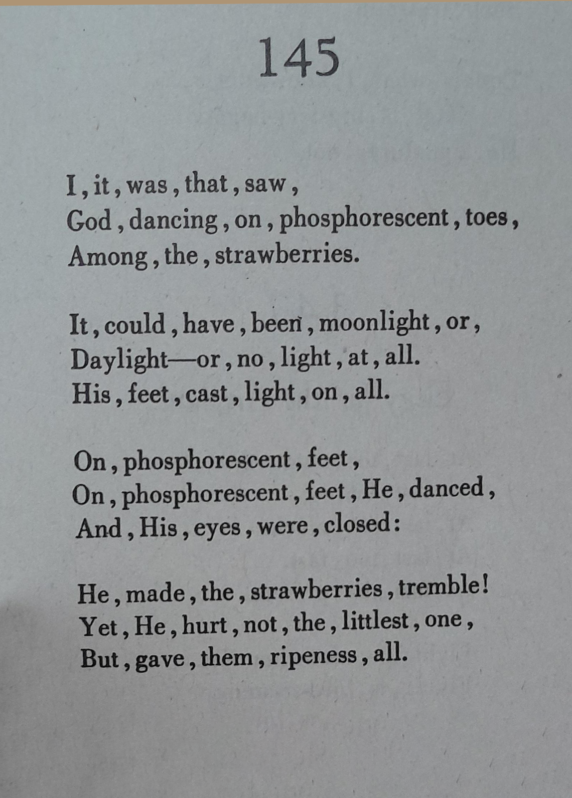
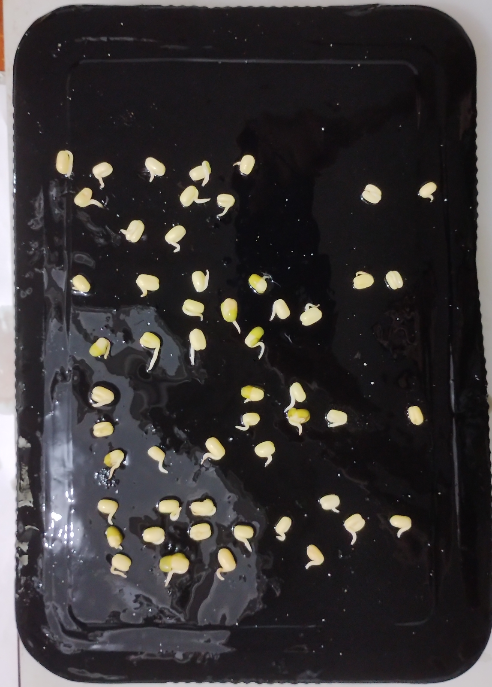

xyh tamura
after José García Villa’s “I, it, was, that, saw,” before the coming El Niño


fade or wipe between the original punctuation field and its sprouted transfer
This work copies only the commas from José García Villa’s “I, it, was, that, saw,” and replants them as mung bean sprouts on a slab of black gulaman. Villa’s poem imagines a cultivatory miracle: a figure dances among strawberries, yet the feet that might crush instead give light, trembling, and ripeness. Here, that agricultural vision is shifted into a smaller domestic ritual of munggo germination.
Made on 2026-06-14, the piece stands before a developing El Niño: a Pacific climate event expected to bring uneven heat, drought, rain, and agricultural stress across different regions. In the Philippines, where El Niño often means dry spells and strained water. I think of this act as a small spell or prayer for what may come, or even like a comma, something that marks a pause before the next thing happens.
Black gulaman matters as a ground. It recalls palamig culture, where dark jelly is part of cold refreshment on hot days, but here it becomes a wet field recalling wet soil.
The digital version places the source poem and the sprouted comma-map on the same coordinates, allowing the reader to fade or wipe between them.
Climate context: PAGASA reported El Niño conditions in the tropical Pacific on 2026-06-09, with most models suggesting over 80% probability of a full El Niño event likely to persist until early 2027. NOAA/CPC issued an El Niño Advisory on 2026-06-11, noting that conditions were present and expected to strengthen into Northern Hemisphere winter 2026–27.
The mung beans were sprouted before they were placed on the slab. They were soaked in a small tub or bowl of water overnight and into a second night, with the water replaced as it began to cloud and ferment. The beans slowly split open, producing the short white sprouts used for the piece.
To transfer the poem’s spacing, a sheet of paper was overlaid on a screen showing the source poem. Each comma was marked, then punctured. The paper became a stencil: its holes were used to pierce corresponding points into the black gulaman, turning the poem’s punctuation into a set of planting coordinates.
Material note
Mung bean sprouts and black gulaman / agar-agar. The living marks are temporary: they continue by curling, drying, tangling, or decaying after the moment of composition.